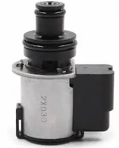
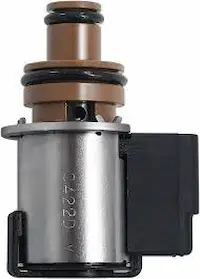

Understanding Subaru CVT solenoids
Subaru cvt transmission rely on several Hydraulic solenoids located inside the Valvebody. The Solenoids control clutch engagement and distribution,Hydraulic pressure and torque converter Lockup.When one of the solenoids fails,the vehicle enters fail-safe mode and looses performance.
Transfer solenoid(AWD)

It enables powere delivery to the rear wheels of the vehicle. when it fails:
- Oil Temp light flashes
- Trackion is reduced
- vehicle becomes front wheel drive only
- Rear end feels unstable especially on wet roads
Replacement solenoid cost between ksh 35000-ksh 60000 depending on the model
Lockup duty solenoid(Torque converter solenoid)

It engages the torque converter clutch to reduce slippage and improves fuel economy. when it fails:
- RPM stays high at 80km/h +
- Poor fuel economy
- Delayed Acceleration
- Possible shuddering/jerking or vibration
Replacement solenoid cost between ksh 40000-ksh 80000 depending on the model
General symptoms of solenoid failure
- High fuel consumption
- Reduced engine power
- Transmission overheating
- Multible dashboard warning light
- Poor Acceleration
- vehicle enters fail-safe mode
Solenoid pricing (Kenya Market Estimate)
| Solenoid Type | Price(KES) |
|---|---|
| AWD Solenoid | 7,000-15,000 |
| Lockup Solenoid | 8,000-15,000 |
| Primary Down/Up Solenoid | 8,000-15000 |